課堂介紹
期中週前一晚，你被鎖在系館裡。早上 7 點前要把報告交出去。
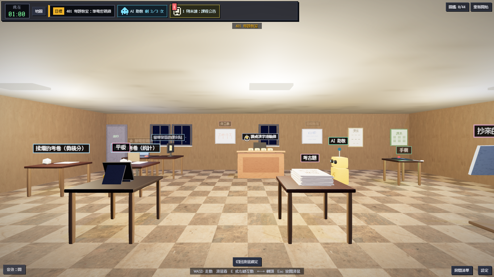
組員把雲端的報告刪了，07:00 前要交到 Moodle。
3
401、四樓走廊、503
8
從筆電密碼到廣播控制台
40
每種都有圖和提示
44
死法和結局都會收進去
起點。筆電和講桌的謎題在這裡。
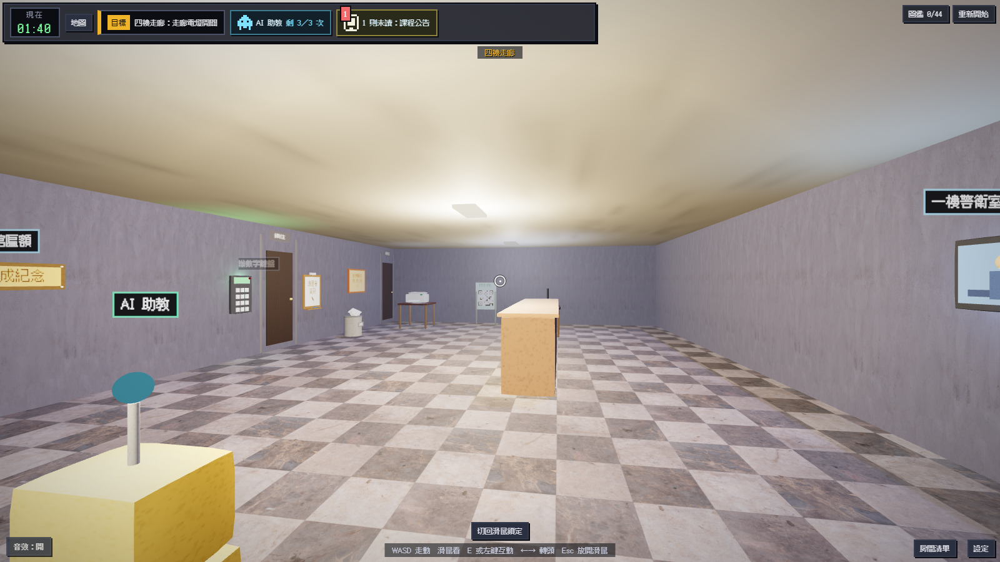
電燈、販賣機、系辦鍵盤、廣播控制台。
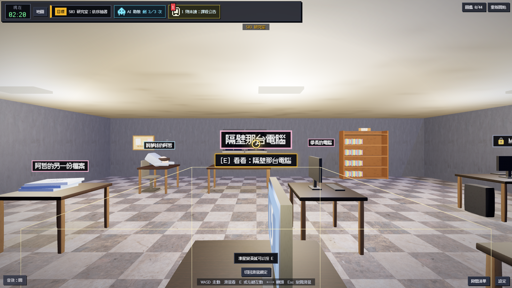
阿哲睡在這裡。書架和公用電腦的謎題。
| 關卡 | 謎題 | 地點 |
|---|---|---|
| 1 | 筆電密碼鎖 | 401 專題教室 |
| 2 | 講桌漢字滾輪鎖 | 401 專題教室 |
| 3 | 走廊電燈開關 | 四樓走廊 |
| 4 | 販賣機按鍵 | 四樓走廊 |
| 5 | 依序抽書 | 503 研究室 |
| 6 | 系辦數字鍵盤 | 四樓走廊 |
| 7 | Moodle 交件 | 503 研究室 |
| 8 | 廣播控制台 | 四樓走廊 |
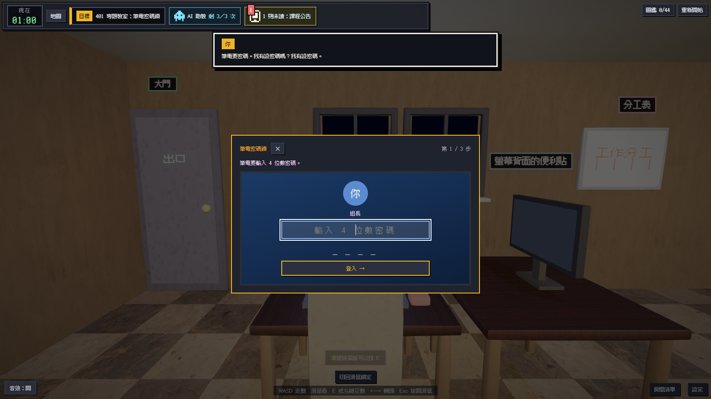
輸入四位數密碼。
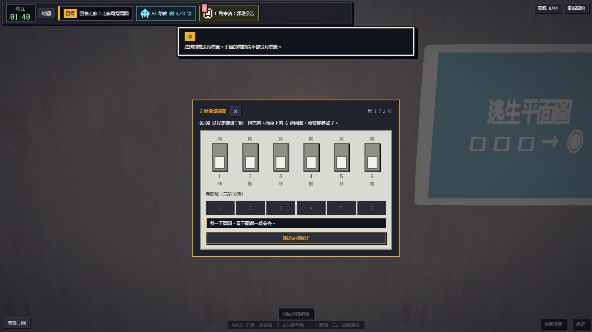
像真的開關一樣撥。
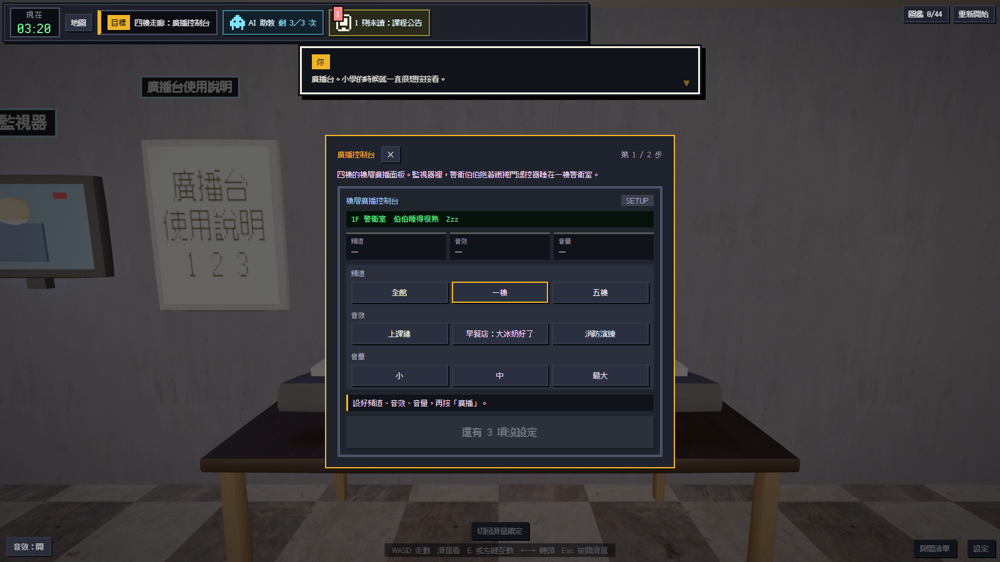
選頻道，調音量。
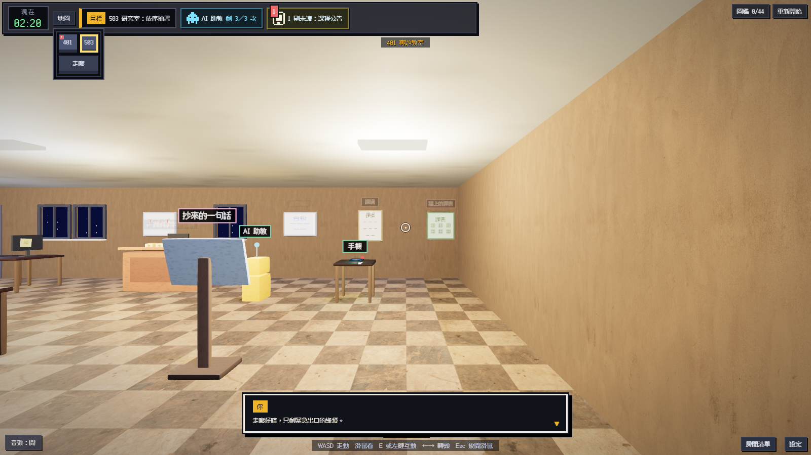
現在時間、目標、AI 助教剩幾次、未讀訊息。
對準物件會顯示按鍵，太遠會寫「靠近一點」。
按「地圖」打開，三個房間都在上面。
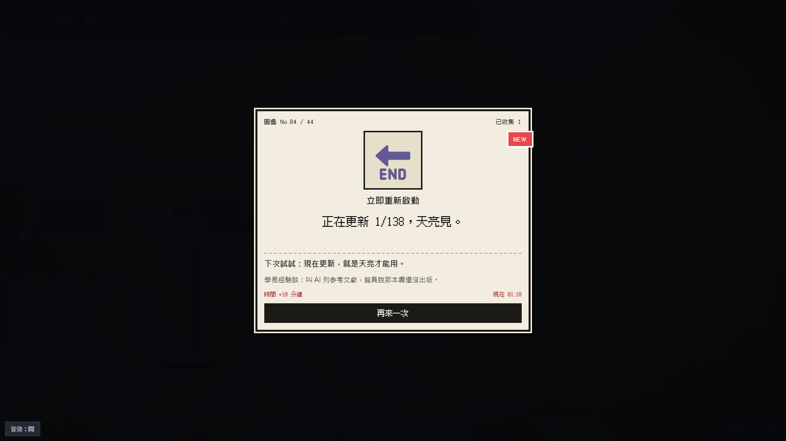
寫出你做了什麼，附一句提示。
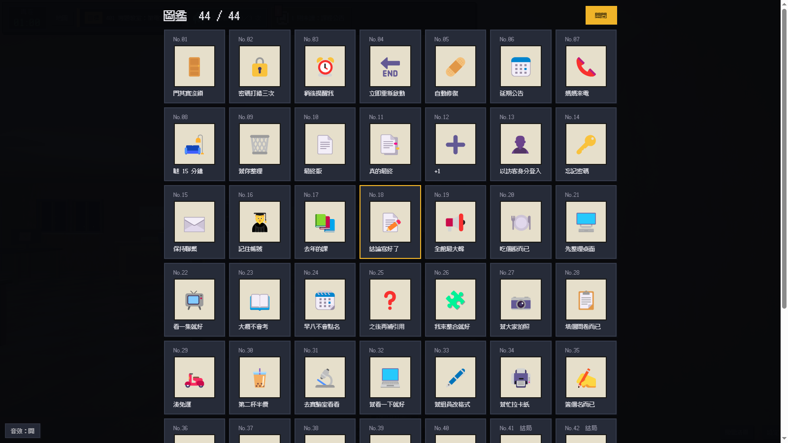
44 格，死法和結局都收進來。
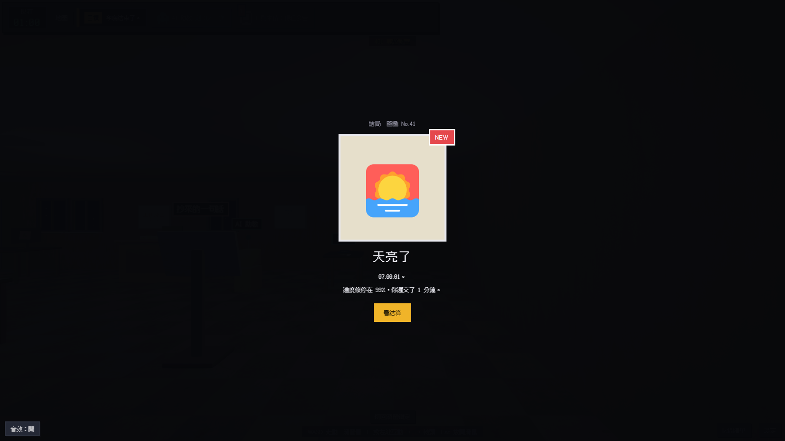
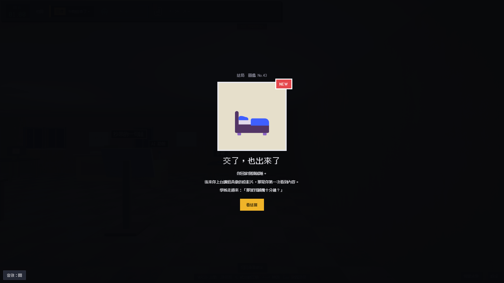
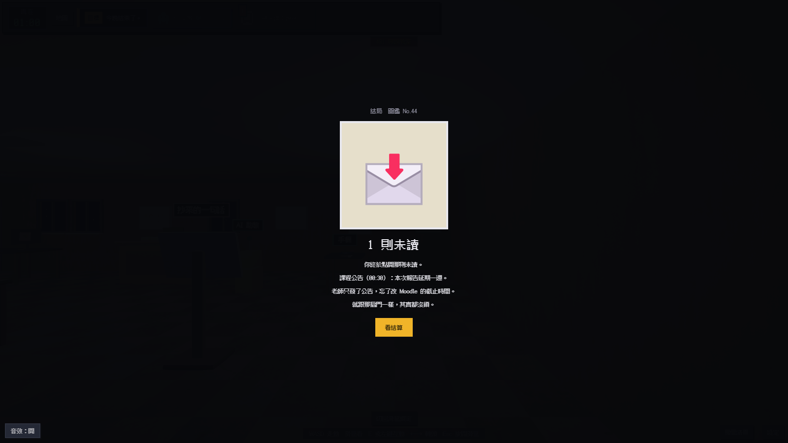
用 three.js 畫場景。檔案都打包在一起，雙擊 index.html 就能玩，不用連網。
規則寫在程式裡。謎題、文字、死法放在 JSON 檔，改內容不用動規則。
Opus 決定做法，Sonnet 動手改。每個問題開一個 GitHub issue，組員驗收後才合併。
天亮前，把報告交出去。
雙擊 dist 資料夾裡的 index.html 就能開始。